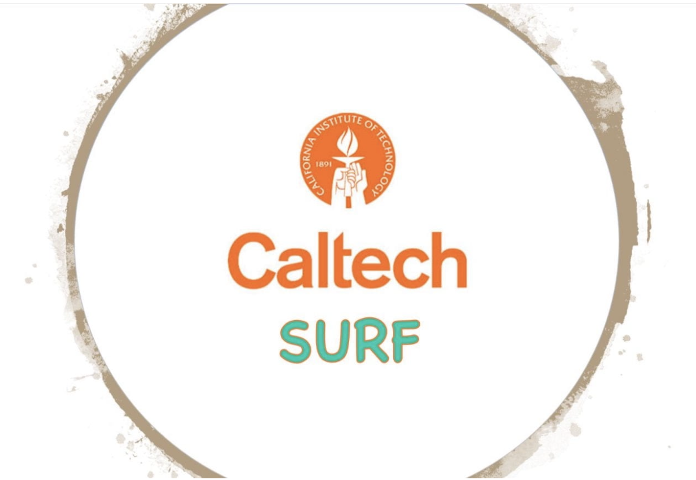

I am a PhD student in the
Astrophysics Department at the California Institute of Technology.
My field of research is time-domain and multi-messenger astronomy - the
study of our dynamic sky.
I am currently studying unusual cosmic explosions,
stars that show unusual variations in their brightness and
hunting for light from gravitational waves.
I use robotic telescopes that survey the sky at the visual and
infrared wavelengths to look for such stars and explosions. Once
identified, I use some of the largest telescopes in the world to
study them in more detail. I also work on developing software to
enable discoveries of such phenomena. My PhD advisor is Prof.
Mansi
Kasliwal .
My publications
Here
is a complete list of my refereed publications,
and here
is a list of publications where I am the first-author or have major
contributions.
Media / Outreach
Astrobites
I was an astrobites author for
two years! Check out my articles
here.
Star eats planet!
Our paper on a star engulfing a
planet made it to the NY Times cover!
A New Scientist
article featuring me talking about the dimmest supernova discovered
to date.
A Youtube video
of me talking about this supernova.

Mentorship
So far, I have mentored three
awesome undergraduate students - Kayton Truong (2021),
Sulekha Kishore (2022) and Aswin Suresh (2023)
for summer research projects as part of the Caltech
Summer Undergrad Research Fellowship program.
Astronomy Public Outreach
I enjoy volunteering
at astronomy outreach events in and around
Pasadena. My favorites include Astronomy on Tap,
curbside stargazing sessions,
public lectures and stargazing nights at Caltech.
Research Description
For my work, I make use of all three time-domain surveys that operate out of
the Palomar Observatory -
The Zwicky Transient Facility (ZTF)
The ZTF camera is mounted
on a 1.2m telescope, has a whopping field-of-view (FOV) of 47 sq. deg.
and has been surveying the entire northern sky every couple days since
2018 in the g,r,i bands to a depth of 20.5 mag.
Palomar Gattini IR (PGIR)
PGIR is a 30 cm. J-band detector
with a 25 sq. deg. FOV and has been surveying the northern sky at a few day cadence
to a depth of J = 15 mag since 2019.
The Wide-field Infrared Transient Explorer (WINTER)
WINTER is a new IR surveyor on a 1 m telescope with a 1 sq. deg. FOV.
WINTER had first light in June 2023 and will conduct a time-domain survey
of the northern sky to J = 20 mag. Developing the data processing
pipeline for WINTER is a major part of my thesis.
I use these surveys to work on the following scientific areas :-
Electromagnetic followup of gravitational
waves
I work with ZTF and WINTER teams to follow-up gravitational
wave alerts detected by the LIGO collaboration to search for their
electromagnetic counterparts - the elusive kilonovae.
ZTF's large FOV is well-suited to search for the
fast-fading kilonovae associated with binary
neutron star or neutron star-black hole mergers. ZTF
conducted GW followup campaigns during LIGO-O3
(paper),
and will continue to do so during the LIGO's
ongoing O4 observing run.
WINTER's NIR sensitivity is well-suited to search for kilonovae,
as they are expected to be brighter and longer-lasting
at infrared wavelengths. Using realistic GW simulations,
we found that WINTER is capable of efficiently
searching for kilonovae during LIGO O4
(paper).
Stellar Mergers and Common-Envelope Evolution
Luminous Red Novae (LRNe) are transients associated with the
final stages of common-envelope evolution in stellar binaries -
a stellar merger or common-envelope ejection. LRNe have low
intrinsic luminosities, making them observationally rare.
I use a systematic, volume-limited survey of transients discovered
by ZTF to search for LRNe and study their demographics.
With ZTF, we constructed the first systematic sample of LRNe
and constrained their rates and luminosity function
(paper).
I am now searching for LRNe using WINTER, to uncover the
dustiest stellar mergers that are being missed by optical
telescopes like ZTF. I also led an approved program on JWST
to conduct mid-IR observations of LRNe during Cycle 2
to study their dust properties.
R-Coronae-Borealis stars - Remnants of
low-mass white-dwarf mergers
The remnants of low-mass white dwarf (WD) mergers are
expected to spend a significant part of their lives as
puffed-up supergiant stars. R-Coronae Borealis (RCB)
stars are an enigmatic class of supergiants that have
chemical compositions consistent with being WD merger
remnants. Adding to their mystery, RCB stars show rapid
brightness declines due to dust-formation around them.
I am conducting a systematic infrared search for RCB stars
using the PGIR. I use PGIR
infrared lightcurves of millions of stars to identify those
showing RCB-like erratic variations in their lightcurves. I then
use NIR spectroscopy to confirm their nature
(paper). I also
use the spectra to study the chemical abundances of RCB
stars (paper).
Low luminosity type Iax supernovae
Type Iax supernovae (SNe Iax) are a peculiar class of thermonuclear supernovae, that are
thought to be the result of the partial deflagration of a white dwarf (WD) accreting from a companion.
There is a sub-population of SNe Iax that are intrinsically fainter than the rest and cannot be explained
by the standard WD deflagration model.
With ZTF, we discovered the lowest luminosity SN Iax to date, SN 2021fcg
(paper).
This SN had a peak
absolute magnitude of a mere -12.5 mag and could not be explained by the standard WD deflagration model.
A promising alternative model was the merger of an ONe WD with a CO WD.
I am now accumulating a systematic sample of low luminosity SNe Iax using ZTF. I also led a successful HST proposal
to observe SN 2021fcg to search for its remnant, and constrain its progenitor system.
Data processing pipelines for time-domain
surveys
I co-created mirar
(Modular Image Reduction and
Analysis Resource) - an open-source python package for
processing and analyzing images from time-domain surveys.
The modular and flexible design of mirar allows for reducing
images and detecting transients by performing image
subtraction on images from any optical/infrared telescope.
Originally built to process WINTER data, mirar is now being
used to process data from four other telescopes.
{kind=link}
{kind=link}
{kind=link}
{kind=link}
{kind=link}